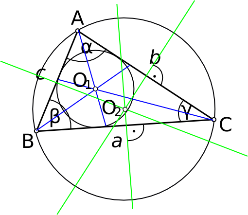

⋅ a ⋅ h, kus a on alus, h on kõrgus.
⋅ a ⋅ h, kus a on alus, h on kõrgus.

Kolmnurga välisnurgaks nimetatakse nurka, mis on saadud kolmnurga serva
pikendamise teel. Välisnurk on moodustatud pikendatud serva ja sellega lõikuva serva
poolt.
Kolmnurga kesklõiguks nimetatakse lõiku, mis ühendab kahe külje keskpunkte.
Kolmnurga mediaaniks nimetatakse kolmnurga tipust vastaskülje keskpunkti
tõmmatud lõiku. Kolmnurgal on kolm mediaani.
Kolmnurga ümberringjooneks nimetatakse ringjoont, mis puutub kõiki
kolmnurga tippe. Kolmnurga ümberringjoonte keskpunkt asub külgede keskristsirgete
lõikepunktis.
Kolmnurga siseringjooneks nimetatakse ringjoont, mis asub kolmnurga sees
ja puutub komnurga kõiki külgi. Kolmnurga siseringjoone keskpunkt asub
nurgapoolitajate ristumiskohas.
Kolmnurga omadusi:
⋅ a ⋅ h, kus a on alus, h on kõrgus.